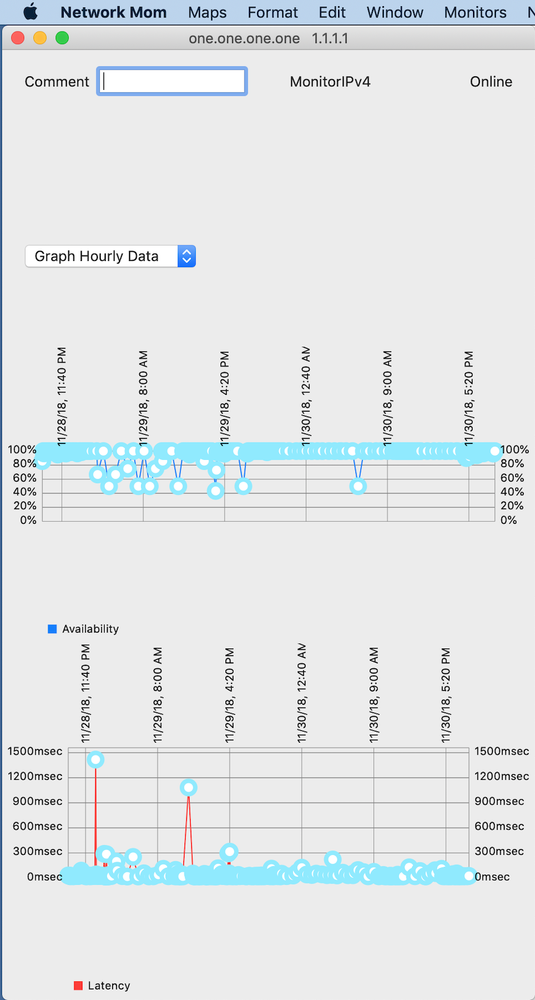

Show monitor detail
To show detailed information about a monitor, including a graph of historic availability and latency, double-click on the monitor in the map. The detail view will show:
Hostname and IP address (in title bar)
Comment (can be updated)
Monitor type (IPv4 ping or IPv6 ping)
Current availability state
Graph of historic availability
Graph of historic latency
There is a time selector which allows you to graph 5-minute data, hourly data, or daily data.
Graphs will not display meaningful data until sufficient data is collected for that monitor.

https://networkmom.net feedback@networkmom.net Copyright 2019 Network Mom LLC